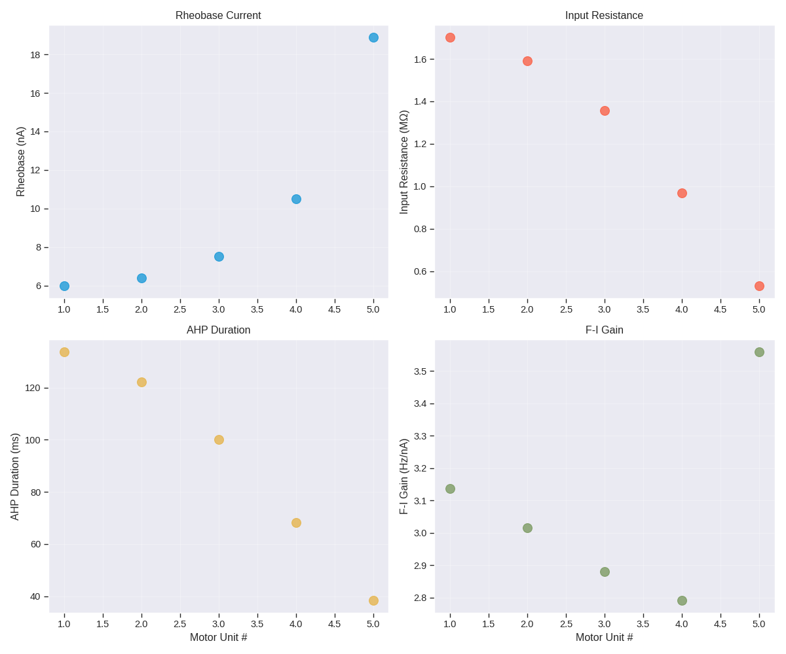
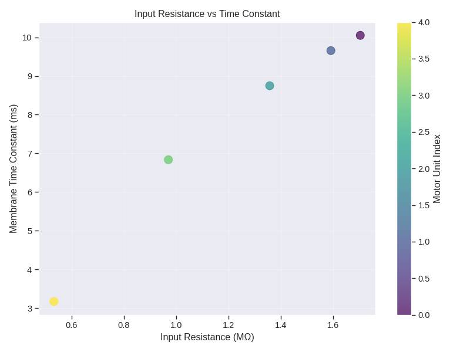

Note
Go to the end to download the full example code.
Extract Neuron Parameters#
This example demonstrates how to extract electrophysiological parameters from MyoGen motor neurons using the Fuglevand recruitment model.
Parameters Extracted:
Vhold: Resting membrane potential (soma)
Rin: Input resistance
tau: Membrane time constant
Ir: Rheobase (minimum current for action potential)
AP: Action potential amplitude
AHP: Afterhyperpolarization depth
AHPdur: Full AHP duration
FI_gain: Frequency-current gain (slope of F-I curve)
Usage:
# Extract from default 5 neurons python 09_extract_neuron_parameters.py
# Extract from custom number of neurons python 09_extract_neuron_parameters.py –n-neurons 10
Note: For advanced features (parallel processing, model comparison, slope scan), see sandbox/neuron_parameter_extraction/README.md
Import Libraries#
import logging
import os
os.environ["MPLBACKEND"] = "Agg"
if "DISPLAY" in os.environ:
del os.environ["DISPLAY"]
from pathlib import Path
import matplotlib.pyplot as plt
import numpy as np
import pandas as pd
import seaborn as sns
from neuron import h
import myogen
from myogen import simulator
from myogen.simulator.neuron.populations import AlphaMN__Pool
from myogen.utils.nmodl import load_nmodl_mechanisms
# Simple plotting style
plt.style.use("seaborn-v0_8-darkgrid")
sns.set_context("paper", font_scale=1.2)
# Setup NEURON environment
h.load_file("stdrun.hoc")
# Setup logging
logging.basicConfig(level=logging.INFO, format="%(asctime)s - %(levelname)s - %(message)s")
logger = logging.getLogger(__name__)
Core Parameter Extraction Functions#
def fi0_multicompartment(sections: list, voltages: list) -> None:
"""Initialize voltages for multiple compartments."""
for sec, v in zip(sections, voltages):
sec.v = v
def get_vhold__mV(cell, sections: list, voltages: list, tstop__ms: float = 500.0) -> float:
"""
Measure resting membrane potential for soma.
Returns
-------
float
Steady-state voltage in soma (mV).
"""
h.tstop = tstop__ms
h.dt = 0.0125
h.celsius = 36
_ = h.FInitializeHandler(0, lambda: fi0_multicompartment(sections, voltages))
vsoma = h.Vector()
vsoma.record(cell.soma(0.5)._ref_v)
h.finitialize()
h.run()
return vsoma.to_python()[-1]
def get_rin__MOhm(
cell,
vhold__mV: float,
sections: list,
amplitudes__nA: list[float] = None,
) -> float:
"""
Measure input resistance using current steps.
Returns
-------
float
Input resistance in MegaOhms.
"""
if amplitudes__nA is None:
amplitudes__nA = [-5.0, -4.0, -3.0, -2.0, -1.0]
h.tstop = 1000.0
h.dt = 0.0125
h.celsius = 36
voltages = [vhold__mV] * len(sections)
_ = h.FInitializeHandler(0, lambda: fi0_multicompartment(sections, voltages))
vsoma = h.Vector()
vsoma.record(cell.soma(0.5)._ref_v)
delta_v__mV = []
for amp__nA in amplitudes__nA:
stim = h.IClamp(cell.soma(0.5))
stim.amp = amp__nA
stim.dur = 1000.0
stim.delay = 0
h.finitialize()
h.run()
vpeak__mV = vsoma.to_python()[-1]
dv = vpeak__mV - vhold__mV
delta_v__mV.append(dv)
del stim
coefficients = np.polyfit(amplitudes__nA, delta_v__mV, 1)
rin__MOhm = coefficients[0]
return rin__MOhm
def get_time_constant__ms(cell, vhold__mV: float, sections: list) -> float:
"""
Measure membrane time constant from exponential decay.
Returns
-------
float
Membrane time constant in milliseconds.
"""
h.tstop = 200.0
h.dt = 0.0125
h.celsius = 36
voltages = [vhold__mV] * len(sections)
_ = h.FInitializeHandler(0, lambda: fi0_multicompartment(sections, voltages))
vsoma = h.Vector()
t = h.Vector()
vsoma.record(cell.soma(0.5)._ref_v)
t.record(h._ref_t)
stim = h.IClamp(cell.soma(0.5))
stim.amp = -20.0 # nA
stim.dur = 1.0 # ms
stim.delay = 5.0 # ms
h.finitialize()
h.run()
vsoma_array = vsoma.as_numpy()
t_array = t.as_numpy()
v_min__mV = np.min(vsoma_array)
v_min_index = np.where(vsoma_array == v_min__mV)[0][0]
recovery_indices = np.where(vsoma_array[v_min_index:] > vhold__mV - 0.1)[0]
if len(recovery_indices) > 0:
v_end_index = recovery_indices[0] + v_min_index
else:
v_end_index = len(vsoma_array) - 1
t_fit = t_array[v_min_index:v_end_index]
v_fit = vsoma_array[v_min_index:v_end_index]
log_v_fit = np.log(np.abs(v_fit - vhold__mV))
coefficients = np.polyfit(t_fit, log_v_fit, 1)
tau__ms = -1.0 / coefficients[0]
return tau__ms
def get_rheobase__nA(
cell, vhold__mV: float, sections: list, max_iterations: int = 500
) -> float:
"""
Find minimum current required to elicit an action potential.
Returns
-------
float
Rheobase current in nanoamperes, or np.nan if no spike found.
"""
h.tstop = 100.0
h.dt = 0.0125
h.celsius = 36
voltages = [vhold__mV] * len(sections)
_ = h.FInitializeHandler(0, lambda: fi0_multicompartment(sections, voltages))
vsoma = h.Vector()
vsoma.record(cell.soma(0.5)._ref_v)
stim = h.IClamp(cell.soma(0.5))
stim.dur = 50.0
stim.delay = 0
spike_threshold__mV = vhold__mV + 40.0
amp__nA = 0.1
iteration = 0
while iteration < max_iterations:
stim.amp = amp__nA
h.finitialize()
h.run()
vpeak__mV = np.max(vsoma.as_numpy())
if vpeak__mV >= spike_threshold__mV:
return amp__nA
amp__nA += 0.1
iteration += 1
logger.warning(f"No spike found after {max_iterations} iterations")
return np.nan
def get_ap_and_ahp(cell, vhold__mV: float, sections: list) -> dict:
"""
Measure action potential and afterhyperpolarization characteristics.
Returns
-------
dict
Contains 'AP__mV', 'AHP__mV', 'AHPdur__ms'
"""
h.tstop = 900.0
h.dt = 0.0125
h.celsius = 36
voltages = [vhold__mV] * len(sections)
_ = h.FInitializeHandler(0, lambda: fi0_multicompartment(sections, voltages))
vsoma = h.Vector()
t = h.Vector()
vsoma.record(cell.soma(0.5)._ref_v)
t.record(h._ref_t)
stim = h.IClamp(cell.soma(0.5))
stim.dur = 0.5
stim.delay = 5.0
amp__nA = 35.0
vpeak__mV = vhold__mV
spike_threshold__mV = vhold__mV + 40.0
while vpeak__mV < spike_threshold__mV:
amp__nA += 10.0
stim.amp = amp__nA
h.finitialize()
h.run()
vsoma_array = vsoma.as_numpy()
vpeak__mV = np.max(vsoma_array)
vvalley__mV = np.min(vsoma_array)
if amp__nA > 500.0:
logger.warning("Current exceeded 500 nA without spike")
return {"AP__mV": np.nan, "AHP__mV": np.nan, "AHPdur__ms": np.nan}
ap__mV = vpeak__mV - vhold__mV
ahp__mV = vhold__mV - vvalley__mV
t_array = t.as_numpy()
peak_index = np.where(vsoma_array == vpeak__mV)[0][0]
valley_index = np.where(vsoma_array == vvalley__mV)[0][0]
recovery_indices = np.where(vsoma_array[valley_index:] > vhold__mV - 0.15)[0]
if len(recovery_indices) > 0:
recovery_index = recovery_indices[0] + valley_index
ahp_dur__ms = t_array[recovery_index] - t_array[peak_index]
else:
ahp_dur__ms = np.nan
return {"AP__mV": ap__mV, "AHP__mV": ahp__mV, "AHPdur__ms": ahp_dur__ms}
def get_fi_gain(cell, vhold__mV: float, sections: list, rheobase__nA: float) -> float:
"""
Measure frequency-current (F-I) gain.
Returns
-------
float
F-I gain in Hz/nA.
"""
if np.isnan(rheobase__nA):
return np.nan
h.tstop = 3000.0
h.dt = 0.0125
h.celsius = 36
voltages = [vhold__mV] * len(sections)
_ = h.FInitializeHandler(0, lambda: fi0_multicompartment(sections, voltages))
stim = h.IClamp(cell.soma(0.5))
stim.dur = 3000.0
stim.delay = 0
current_levels = np.arange(5.0, 30.5, 5.0)
firing_rates = []
for current__nA in current_levels:
stim.amp = current__nA
apc = h.APCount(cell.soma(0.5))
apc.thresh = 50
h.finitialize()
h.run()
spike_count = apc.n
firing_rate__Hz = (spike_count / 2500.0) * 1000.0
firing_rates.append(firing_rate__Hz)
firing_rates = np.array(firing_rates)
fit_mask = current_levels >= rheobase__nA
if np.sum(fit_mask) >= 2:
fit_currents = current_levels[fit_mask]
fit_rates = firing_rates[fit_mask]
coefficients = np.polyfit(fit_currents, fit_rates, 1)
gain__Hz_per_nA = coefficients[0]
return gain__Hz_per_nA
else:
return np.nan
def extract_all_parameters(cell, cell_index: int, recruitment_threshold: float) -> dict:
"""
Extract all electrophysiological parameters from a single neuron.
Returns
-------
dict
Dictionary containing all extracted parameters and metadata.
"""
logger.info(f"Extracting parameters for cell {cell_index}")
sections = [cell.soma] + cell.dend
v_init__mV = -67.0
voltages = [v_init__mV] * len(sections)
result = {"cell_index": cell_index, "recruitment_threshold": recruitment_threshold}
# Extract parameters
try:
vhold__mV = get_vhold__mV(cell, sections, voltages)
result["vhold_soma__mV"] = vhold__mV
except Exception as e:
logger.error(f"Cell {cell_index}: Failed to get Vhold - {e}")
result["vhold_soma__mV"] = np.nan
vhold__mV = v_init__mV
try:
result["Rin__MOhm"] = get_rin__MOhm(cell, vhold__mV, sections)
except Exception as e:
logger.error(f"Cell {cell_index}: Failed to get Rin - {e}")
result["Rin__MOhm"] = np.nan
try:
result["tau__ms"] = get_time_constant__ms(cell, vhold__mV, sections)
except Exception as e:
logger.error(f"Cell {cell_index}: Failed to get tau - {e}")
result["tau__ms"] = np.nan
try:
ir__nA = get_rheobase__nA(cell, vhold__mV, sections)
result["Ir__nA"] = ir__nA
except Exception as e:
logger.error(f"Cell {cell_index}: Failed to get rheobase - {e}")
result["Ir__nA"] = np.nan
try:
ap_ahp_params = get_ap_and_ahp(cell, vhold__mV, sections)
result.update(ap_ahp_params)
except Exception as e:
logger.error(f"Cell {cell_index}: Failed to get AP/AHP - {e}")
result.update({"AP__mV": np.nan, "AHP__mV": np.nan, "AHPdur__ms": np.nan})
try:
rheobase__nA = result.get("Ir__nA", np.nan)
result["FI_gain__Hz_per_nA"] = get_fi_gain(cell, vhold__mV, sections, rheobase__nA)
except Exception as e:
logger.error(f"Cell {cell_index}: Failed to get F-I gain - {e}")
result["FI_gain__Hz_per_nA"] = np.nan
logger.info(f"Cell {cell_index}: Extraction complete")
return result
Visualization Functions#
def visualize_results(df: pd.DataFrame, save_path: Path) -> None:
"""Create basic visualization plots of extracted parameters."""
logger.info("Creating visualizations")
df_valid = df.dropna(subset=["Ir__nA"])
if len(df_valid) == 0:
logger.warning("No valid data for visualization")
return
x = df_valid["cell_index"] + 1
# Figure 1: Key parameters
fig, axes = plt.subplots(2, 2, figsize=(12, 10))
# Rheobase
axes[0, 0].scatter(x, df_valid["Ir__nA"], s=100, alpha=0.7)
axes[0, 0].set_ylabel("Rheobase (nA)")
axes[0, 0].set_title("Rheobase Current")
axes[0, 0].grid(True, alpha=0.3)
# Input Resistance
axes[0, 1].scatter(x, df_valid["Rin__MOhm"], s=100, alpha=0.7, color="C1")
axes[0, 1].set_ylabel("Input Resistance (MΩ)")
axes[0, 1].set_title("Input Resistance")
axes[0, 1].grid(True, alpha=0.3)
# AHP Duration
axes[1, 0].scatter(x, df_valid["AHPdur__ms"], s=100, alpha=0.7, color="C2")
axes[1, 0].set_xlabel("Motor Unit #")
axes[1, 0].set_ylabel("AHP Duration (ms)")
axes[1, 0].set_title("AHP Duration")
axes[1, 0].grid(True, alpha=0.3)
# F-I Gain
axes[1, 1].scatter(x, df_valid["FI_gain__Hz_per_nA"], s=100, alpha=0.7, color="C3")
axes[1, 1].set_xlabel("Motor Unit #")
axes[1, 1].set_ylabel("F-I Gain (Hz/nA)")
axes[1, 1].set_title("F-I Gain")
axes[1, 1].grid(True, alpha=0.3)
plt.tight_layout()
fig_path = save_path / "neuron_parameters.png"
plt.savefig(fig_path, dpi=300, bbox_inches="tight")
logger.info(f"Saved figure to {fig_path}")
plt.show()
# Figure 2: Rin vs Tau
fig2, ax = plt.subplots(figsize=(8, 6))
scatter = ax.scatter(
df_valid["Rin__MOhm"],
df_valid["tau__ms"],
c=df_valid["cell_index"],
cmap="viridis",
s=100,
alpha=0.7,
)
cbar = plt.colorbar(scatter, ax=ax)
cbar.set_label("Motor Unit Index")
ax.set_xlabel("Input Resistance (MΩ)")
ax.set_ylabel("Membrane Time Constant (ms)")
ax.set_title("Input Resistance vs Time Constant")
ax.grid(True, alpha=0.3)
plt.tight_layout()
fig2_path = save_path / "rin_tau_relationship.png"
plt.savefig(fig2_path, dpi=300, bbox_inches="tight")
logger.info(f"Saved figure to {fig2_path}")
plt.show()
Main Function#
def main():
"""Main demonstration function."""
import argparse
parser = argparse.ArgumentParser(
description="Extract electrophysiological parameters from MyoGen motor neurons"
)
parser.add_argument(
"--n-neurons",
type=int,
default=5,
help="Number of neurons to extract (default: 5)",
)
parser.add_argument(
"--seed",
type=int,
default=42,
help="Random seed for reproducibility (default: 42)",
)
args = parser.parse_args()
# Setup
save_path = Path("./results")
save_path.mkdir(exist_ok=True)
myogen.set_random_seed(args.seed)
logger.info(f"Random seed set to {args.seed}")
load_nmodl_mechanisms()
logger.info("MyoGen NEURON mechanisms loaded")
# Generate recruitment thresholds using Fuglevand model
logger.info(f"Generating {args.n_neurons} neurons with Fuglevand model")
recruitment_thresholds, _ = simulator.RecruitmentThresholds(
N=args.n_neurons,
recruitment_range__ratio=100,
mode="fuglevand",
)
# Create motor neuron pool
logger.info("Creating motor neuron pool")
pool = AlphaMN__Pool(recruitment_thresholds__array=recruitment_thresholds)
logger.info(f"Created pool with {len(pool._cells)} neurons")
# Extract parameters from all neurons
logger.info(f"Extracting parameters from {args.n_neurons} neurons")
results = []
for i in range(args.n_neurons):
result = extract_all_parameters(pool[i], i, recruitment_thresholds[i])
results.append(result)
# Convert to DataFrame and save
df = pd.DataFrame(results)
csv_path = save_path / "neuron_parameters.csv"
df.to_csv(csv_path, index=False)
logger.info(f"Saved results to {csv_path}")
# Visualize
visualize_results(df, save_path)
logger.info("Parameter extraction complete!")
logger.info("\nSummary statistics:")
logger.info(f" Rheobase range: {df['Ir__nA'].min():.2f} - {df['Ir__nA'].max():.2f} nA")
logger.info(f" Rin range: {df['Rin__MOhm'].min():.2f} - {df['Rin__MOhm'].max():.2f} MΩ")
logger.info(f" F-I gain range: {df['FI_gain__Hz_per_nA'].min():.2f} - {df['FI_gain__Hz_per_nA'].max():.2f} Hz/nA")
if __name__ == "__main__":
main()


Random seed set to 42.
Total running time of the script: (0 minutes 48.328 seconds)